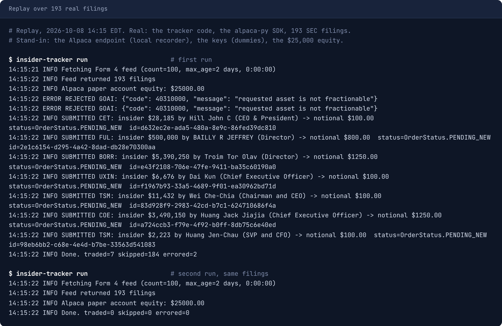

Insider Tracker
A bot that copies what company insiders buy.
When a CEO or director buys their own company's stock with their own money, they have to tell the SEC within two business days. This tool reads those reports, keeps the ones that show real confidence, and places a small matching buy through Alpaca.
What it does on every run
Gets the newest insider reports
It asks the SEC for the latest Form 4 filings. That is the form an insider files when they trade their own company's stock.
Reads each one
Which stock, who traded, their job, buy or sell, how many shares and at what price.
Keeps only the strong signals
All three must be true:
- Bought on the open marketTheir own money. Not a grant, not an option.
- A top insiderA director, CEO, CFO, president or other chief officer.
- Not pre-scheduledA trade set up months ago under a 10b5-1 plan says nothing about today.
Picks a size
The more the insider spent, the more it buys. $100 to $3,000, never over 5% of the account per order.
Buys
It sends Alpaca a market order for that dollar amount. If the market is closed, the order waits for the next open.
Writes it down
Every filing and order is saved with the reason, so you can see what it bought, what it skipped and why. The next run skips what it has already seen.
How much it buys
| The insider spent | It buys |
|---|---|
| Under $50,000 | $100 |
| $50,000 to $250,000 | $300 |
| $250,000 to $1 million | $800 |
| $1 million to $5 million | $1,500 |
| $5 million and up | $3,000 |
Example. A CEO buys $420,000 of their own company's stock. That is the third row, so the order is $800. On a $10,000 account, the 5% cap trims it to $500.
Good to know
- Paper firstPractice money, real prices. Real money has to be asked for twice.
- Buys onlyIt never sells. Closing a position is up to you.
- Mostly says noMost reports are sales or grants. Skipping them is the filter working.
Running it
- See what it would buy. Sends nothing.
insider-tracker run --dry-run - Place the orders.
insider-tracker run - Show what it did and why.
insider-tracker status
How it talks to Alpaca
- How much is in the account?
GET /v2/account - Can this stock be traded?
GET /v2/assets/{symbol} - Buy this many dollars of it.
POST /v2/orders


Audited
That is the design. An audit read every line and ran it. 18 findings. These matter most:
- It misses most filings. Its SEC request pulls in the wrong forms.
- Nothing limits how much it buys in total.
- The pre-scheduled check reads the wrong field, so those trades get through.
- Fixed: a typo could switch it to real money.
Built with
Python, Alpaca's alpaca-py SDK, SEC EDGAR and SQLite. 815 lines. Code on GitHub